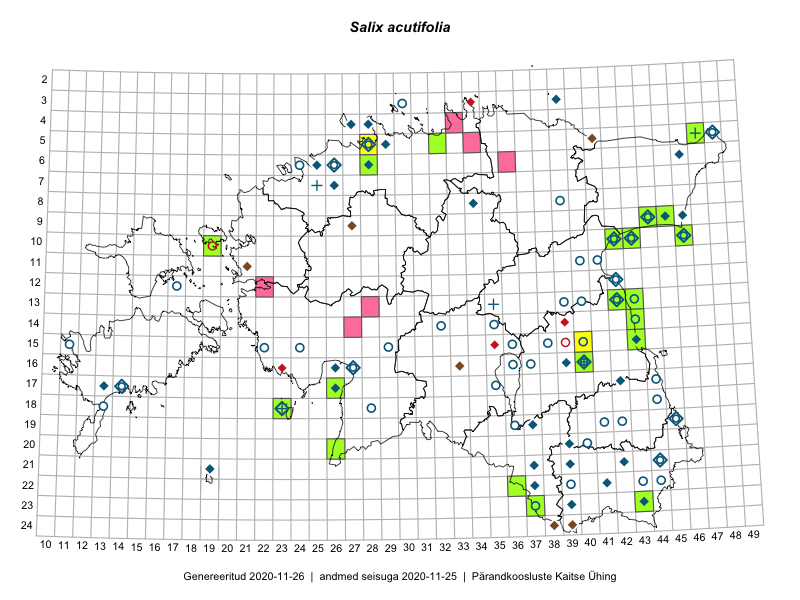

Salix acutifolia — halapaju
Salicaceae :: Salix acutifolia Willd. (228)

Kaart põhineb 248 kirjel:
vaatlusi 52
herbaareksemplare 176
PKÜ kirjeid1 19
ELFi kirjeid2 1
Taime kaasaegsed ja ajaloolised leiukohad asuvad 90 ruudus.
Tingmärgid ja ruutude arvud periooditi (U3 / V4 )
█ 2006–2020 (28/–)
◆/◇ 1971–2005 (43/39)
○ 1921–1970 (48/13)
+ kuni 1920 (5/0)
× hävinud (–/0)
? kaheldav (–/0)
| Ruut | Leidja(d) | Leiuaeg | Kirje |
|---|---|---|---|
| 09-45 | R. Tischler | 2009-08-29 | ruut/ala: Salix acutifolia Willd. |
| 12-17 | Haide-Ene Rebassoo | 1957–1984 | ruut/ala: Salix acutifolia Willd. |
| 05-48 | Maret Kask, Vilma Kuusk, Heljo Krall, Malle Leht, Linda Viljasoo, Liivia Laasimer | 1982-07-10 | ruut/ala: Salix acutifolia Willd. |
| 05-48 | Maret Kask, Linda Viljasoo | 1971–1973 | ruut/ala: Salix acutifolia Willd. |
| 09-44 | Heljo Krall, Malle Leht | 1981-09-07 | ruut/ala: Salix acutifolia Willd. |
| 09-45 | Maret Kask, Linda Viljasoo | 1981-09 | ruut/ala: Salix acutifolia Willd. |
| 09-46 | Heljo Krall, Malle Leht | 1981-09-07 | ruut/ala: Salix acutifolia Willd. |
| 10-42 | Maret Kask | 1953-08 | ruut/ala: Salix acutifolia Willd. |
| 08-34 | Vilma Kuusk, Nele Ingerpuu | 1984-07-20 | ruut/ala: Salix acutifolia Willd. |
| 13-42 | E. Krall | 1984-08-10–1984-08-22 | ruut/ala: Salix acutifolia Willd. |
| 15-43 | Heljo Krall, Nele Ingerpuu | 1986-09-10 | ruut/ala: Salix acutifolia Willd. |
| 04-28 | Maret Kask, Linda Viljasoo | 1973-08 | ruut/ala: Salix acutifolia Willd. |
| 06-24 | V. Sirgo | 1934–1935 | ruut/ala: Salix acutifolia Willd. |
| 06-26 | H. Aasamaa | 1985 | ruut/ala: Salix acutifolia Willd. |
| 06-25 | M. Kask, L. Viljasoo | 1978-09 | ruut/ala: Salix acutifolia Willd. |
| 16-39 | H. Krall | 1986-07-07 | ruut/ala: Salix acutifolia Willd. |
| 22-37 | H. Krall, E. Krall | 1983-07-21 | ruut/ala: Salix acutifolia Willd. |
| 23-39 | H. Krall, L. Laasimer, L. Viljasoo | 1981-06-19 | ruut/ala: Salix acutifolia Willd. |
| 23-43 | N. Ingerpuu, K. Kihno | 1986-06-10 | ruut/ala: Salix acutifolia Willd. |
| 11-41 | M. Kask | 1963–1964 | ruut/ala: Salix acutifolia Willd. |
| 16-40 | Linda Viljasoo, Maret Kask, A. Remmel | 1947–1981 | ruut/ala: Salix acutifolia Willd. |
| 16-40 | Linda Viljasoo, Maret Kask, Heljo Krall | 1987-07-30 | ruut/ala: Salix acutifolia Willd. |
| 17-42 | botaaniline ekspeditsioon ZBI | 1983-08-03 | ruut/ala: Salix acutifolia Willd. |
| 12-42 | E. Krall | 1984-08-24 | ruut/ala: Salix acutifolia Willd. |
| 16-27 | T. Kukk | 1998-07-05–1998-07-08 | ruut/ala: Salix acutifolia Willd. |
| 17-14 | Sirje Azarov, Linda Viljasoo, Heljo Krall | 1985-09-11 | ruut/ala: Salix acutifolia Willd. |
| 17-26 | H. Krall, V. Kuusk, T. Kull, T. Nurmela | 1986-06-22 | ruut/ala: Salix acutifolia Willd. |
| 18-44 | Maret Kask, Linda Viljasoo | 1970–1972 | ruut/ala: Salix acutifolia Willd. |
| 19-36 | Heljo Krall | 1959-06-05 | ruut/ala: Salix acutifolia Willd. |
| 19-37 | Heljo Krall, Nele Ingerpuu | 1986-06-13 | ruut/ala: Salix acutifolia Willd. |
| 19-45 | Ülo Niinemets | 1985–1986 | ruut/ala: Salix acutifolia Willd. |
| 21-37 | Heljo Krall, E. Krall | 1983-07-24–1983-07-25 | ruut/ala: Salix acutifolia Willd. |
| 21-42 | Heljo Krall, Malle Leht, Linda Viljasoo | 1981-06-15 | ruut/ala: Salix acutifolia Willd. |
| 18-23 | TRÜ tudengid | 1973-07-14–1973-07-28 | ruut/ala: Salix acutifolia Willd. |
| 20-39 | H. Krall, N. Ingerpuu | 1986-06-11 | ruut/ala: Salix acutifolia Willd. |
| 21-19 | Haide-Ene Rebassoo | 1979-07-02–1979-07-05 | ruut/ala: Salix acutifolia Willd. |
| 18-23 | TRÜ tudengid | 1973-07-14–1973-07-18 | ruut/ala: Salix acutifolia Willd. |
| 03-39 | Haide-Ene Rebassoo | 1975-06-20 | ruut/ala: Salix acutifolia Willd. |
| 22-41 | botaaniline ekspeditsioon ZBI | 1981-06 | ruut/ala: Salix acutifolia Willd. |
| 07-26 | Linda Viljasoo, Malle Leht | 1986-07-18 | ruut/ala: Salix acutifolia Willd. |
| 10-43 | Peedu Saar | 2015-05-14 | ruut/ala: Salix acutifolia Willd. |
| 09-45 | Peedu Saar, Liina Oja | 2015-07-24 | ruut/ala: Salix acutifolia Willd. |
| 09-45 | Peedu Saar, Liina Oja | 2015-07-24 | ruut/ala: Salix acutifolia Willd. |
| 09-44 | Ott Luuk, Hannes Pehlak | 2015-07-24 | ruut/ala: Salix acutifolia Willd. |
| 15-43 | Thea Kull, Eerik Leibak | 2015-07-06 | ruut/ala: Salix acutifolia Willd. |
| 10-43 | Ulvi Selgis | 2015-09-23 | ruut/ala: Salix acutifolia Willd. |
| 16-40 | Maret Gerz, Ott Luuk | 2014-06-25 | ruut/ala: Salix acutifolia Willd. |
| 15-40 | Kaire Lanno, Karin Kaljund | 2016-07-18 | ruut/ala: Salix acutifolia Willd. |
| 10-46 | Meeli Mesipuu, Karin Kikas | 2016-08-31 | ruut/ala: Salix acutifolia Willd. |
| 17-26 | Meeli Mesipuu, Timo Luhamäe | 2016-07-18 | ruut/ala: Salix acutifolia Willd. |
| 05-28 | Ulvi Selgis | 2017-09-10 | ruut/ala: Salix acutifolia Willd. |
| 10-46 | Peedu Saar, Timo Luhamäe | 2019-09-11 | ruut/ala: Salix acutifolia Willd. |
| 09-44 | Linda Viljasoo | 1963-06-28 | TAA0097435: Salix acutifolia Willd. |
| 17-14 | Raino Lampinen, Tuula Lampinen | 1993-08-12 | TAA0097436: Salix acutifolia Willd. |
| 13-42 | Raino Lampinen, Tuula Lampinen | 1993-08-16 | TAA0097437: Salix acutifolia Willd. |
| 10-42 | Raino Lampinen, Tuula Lampinen | 1993-08-16 | TAA0097438: Salix acutifolia Willd. |
| 18-23 | Toomas Kukk | 2009-09-12 | TAA0097439: Salix acutifolia Willd. |
| 06-28 | Toomas Kukk | 2006-07-27 | TAA0097440: Salix acutifolia Willd. |
| 06-28 | Toomas Kukk | 2006-07-27 | TAA0097441: Salix acutifolia Willd. |
| 05-48 | Raino Lampinen, Tuula Lampinen | 1993-08-16 | TAA0097442: Salix acutifolia Willd. |
| 13-43 | H. Karu, Linda Viljasoo | 1958-10-23 | TAA0097445: Salix acutifolia Willd. |
| 13-43 | H. Karu, Linda Viljasoo | 1958-10-23 | TAA0097446: Salix acutifolia Willd. |
| 05-48 | Alma Saare | 1964-07-28 | TAA0097447: Salix acutifolia Willd. |
| 05-48 | Alma Saare | 1964-07-28 | TAA0097448: Salix acutifolia Willd. |
| 14-43 | Alma Saare | 1964-07-31 | TAA0097449: Salix acutifolia Willd. |
| 13-43 | Agnes Ojaveer | 1964-07-31 | TAA0097450: Salix acutifolia Willd. |
| 11-40 | M. Kask | 1966-07-18 | TAA0097451: Salix acutifolia Willd. |
| 14-32 | H. Rebassoo, Alma Saare | 1965-06-15 | TAA0097452: Salix acutifolia Willd. |
| 05-48 | H. Krall | 1964-07-28 | TAA0097453: Salix acutifolia Willd. |
| 18-13 | H. Kasesalu | 1962-05-23 | TAA0097454: Salix acutifolia Willd. |
| 14-43 | H. Karu, Linda Viljasoo | 1958-10-23 | TAA0097455: Salix acutifolia Willd. |
| 14-43 | H. Karu, Linda Viljasoo | 1958-10-23 | TAA0097456: Salix acutifolia Willd. |
| 13-42 | M. Kask | 1964-07-27 | TAA0097457: Salix acutifolia Willd. |
| 14-43 | Alma Saare | 1964-07-31 | TAA0097458: Salix acutifolia Willd. |
| 10-43 | Agnes Ojaveer, Visolde Puusepp | 1963-06-28 | TAA0097459: Salix acutifolia Willd. |
| 10-43 | Agnes Ojaveer, Visolde Puusepp | 1963-06-28 | TAA0097460: Salix acutifolia Willd. |
| 10-43 | Silvia Talts | 1963-06-28 | TAA0097461: Salix acutifolia Willd. |
| 12-42 | Linda Viljasoo | 1964-07-27 | TAA0097462: Salix acutifolia Willd. |
| 12-42 | Linda Viljasoo | 1964-07-27 | TAA0097463: Salix acutifolia Willd. |
| 19-36 | E. Kalmet, H. Karu | 1959-06-05 | TAA0097464: Salix acutifolia Willd. |
| 10-43 | Agnes Ojaveer, Visolde Puusepp | 1963-06-28 | TAA0097465: Salix acutifolia Willd. |
| 10-46 | Linda Viljasoo, H. Karu | 1959-10-06 | TAA0097466: Salix acutifolia Willd. |
| 10-46 | Linda Viljasoo, H. Karu | 1959-10-06 | TAA0097467: Salix acutifolia Willd. |
| 17-35 | M. Kask | 1959-08-02 | TAA0097468: Salix acutifolia Willd. |
| 04-28 | M. Kask, Linda Viljasoo | 1973-08-21 | TAA0097469: Salix acutifolia Willd. |
| 10-43 | Silvia Talts | 1932-06-17 | TAA0097470: Salix acutifolia Willd. |
| 15-24 | Visolde Puusepp | 1962-07-30 | TAA0097471: Salix acutifolia Willd. |
| 16-36 | Linda Viljasoo | 1963-09-20 | TAA0097472: Salix acutifolia Willd. |
| 16-36 | Linda Viljasoo | 1963-09-20 | TAA0097473: Salix acutifolia Willd. |
| 18-23 | M. Kask | 1973-06-12 | TAA0097474: Salix acutifolia Willd. |
| 16-40 | M. Kask | 1964-07-23 | TAA0097475: Salix acutifolia Willd. |
| 13-39 | M. Kask | 1966-07-26 | TAA0097476: Salix acutifolia Willd. |
| 15-11 | Linda Viljasoo | 1964-06-26 | TAA0097477: Salix acutifolia Willd. |
| 15-11 | M. Kask | 1969-07-26 | TAA0097478: Salix acutifolia Willd. |
| 11-41 | Linda Viljasoo, H. Karu | 1959-10-06 | TAA0097479: Salix acutifolia Willd. |
| 17-44 | Linda Viljasoo | 1959-10-03 | TAA0097480: Salix acutifolia Willd. |
| 09-44 | Linda Viljasoo, H. Karu | 1959-10-06 | TAA0097481: Salix acutifolia Willd. |
| 22-44 | H. Karu | 1959-10-03 | TAA0097482: Salix acutifolia Willd. |
| 06-26 | A. Üksip, Linda Viljasoo | 1960-08-07 | TAA0097483: Salix acutifolia Willd. |
| 11-41 | Linda Viljasoo, H. Karu | 1959-10-06 | TAA0097484: Salix acutifolia Willd. |
| 21-44 | H. Karu | 1959-10-04 | TAA0097485: Salix acutifolia Willd. |
| 21-44 | H. Karu | 1959-10-03 | TAA0097486: Salix acutifolia Willd. |
| 21-44 | H. Karu | 1959-10-04 | TAA0097487: Salix acutifolia Willd. |
| 13-40 | M. Kask | 1968-06-10 | TAA0097488: Salix acutifolia Willd. |
| 05-48 | Linda Viljasoo | 1964-07-28 | TAA0097489: Salix acutifolia Willd. |
| 05-48 | H. Krall | 1964-07-28 | TAA0097490: Salix acutifolia Willd. |
| 05-48 | H. Krall | 1964-07-28 | TAA0097491: Salix acutifolia Willd. |
| 05-48 | H. Krall | 1964-07-28 | TAA0097492: Salix acutifolia Willd. |
| 22-39 | Linda Viljasoo | 1957-08-16 | TAA0097493: Salix acutifolia Willd. |
| 09-44 | Vilma Kuusk | 1963-06-27 | TAA0097494: Salix acutifolia Willd. |
| 09-44 | Vilma Kuusk | 1963-06-27 | TAA0097495: Salix acutifolia Willd. |
| 09-44 | Linda Viljasoo | 1963-06-28 | TAA0097496: Salix acutifolia Willd. |
| 15-22 | Linda Viljasoo | 1962-07-26 | TAA0097499: Salix acutifolia Willd. |
| 16-37 | Linda Viljasoo | 1962-07-05 | TAA0097500: Salix acutifolia Willd. |
| 16-37 | M. Kask | 1962-07-05 | TAA0097501: Salix acutifolia Willd. |
| 15-29 | M. Kask | 1965-06-16 | TAA0097502: Salix acutifolia Willd. |
| 05-28 | Toomas Kukk | 1992-07-23 | TAA0097503: Salix acutifolia Willd. |
| 20-40 | Silvia Talts, Vilma Kuusk | 1960-06-21 | TAA0097504: Salix acutifolia Willd. |
| 19-42 | T. Nurmiste, Ella Tammemägi | 1960-06-07 | TAA0097505: Salix acutifolia Willd. |
| 16-26 | Toomas Kukk | 2004-07-14 | TAA0097506: Salix acutifolia Willd. |
| 16-26 | Toomas Kukk | 2004-07-14 | TAA0097507: Salix acutifolia Willd. |
| 16-26 | Toomas Kukk | 2004-07-14 | TAA0097508: Salix acutifolia Willd. |
| 10-43 | Erast Parmasto | 1950-06-23 | TAA0097509: Salix acutifolia Willd. |
| 15-40 | M. Kask | 1967-06-21 | TAA0097510: Salix acutifolia Willd. |
| 23-37 | Visolde Puusepp | 1959-06-07 | TAA0097511: Salix acutifolia Willd. |
| 23-37 | Linda Viljasoo | 1959-05-07 | TAA0097512: Salix acutifolia Willd. |
| 10-42 | Linda Viljasoo | 1959-05-05 | TAA0097513: Salix acutifolia Willd. |
| 15-38 | Linda Viljasoo | 1962-05-09 | TAA0097514: Salix acutifolia Willd. |
| 15-38 | Linda Viljasoo | 1962-05-09 | TAA0097515: Salix acutifolia Willd. |
| 10-43 | Visolde Puusepp | 1959-05-05 | TAA0097517: Salix acutifolia Willd. |
| 10-43 | Linda Viljasoo | 1959-05-05 | TAA0097518: Salix acutifolia Willd. |
| 10-43 | Visolde Puusepp | 1959-05-05 | TAA0097519: Salix acutifolia Willd. |
| 16-27 | H. Karu, Linda Viljasoo | 1960-05-13 | TAA0097521: Salix acutifolia Willd. |
| 15-11 | Linda Viljasoo | 1962-05-20 | TAA0097522: Salix acutifolia Willd. |
| 10-43 | Visolde Puusepp | 1959-05-05 | TAA0097523: Salix acutifolia Willd. |
| 15-36 | H. Karu, Linda Viljasoo | 1960-05-04 | TAA0097524: Salix acutifolia Willd. |
| 10-43 | Linda Viljasoo | 1959-05-05 | TAA0097525: Salix acutifolia Willd. |
| 10-43 | Linda Viljasoo | 1959-05-05 | TAA0097526: Salix acutifolia Willd. |
| 10-43 | Linda Viljasoo | 1959-05-05 | TAA0097527: Salix acutifolia Willd. |
| 08-39 | Linda Viljasoo | 1959-05-05 | TAA0097528: Salix acutifolia Willd. |
| 08-39 | Linda Viljasoo | 1959-05-05 | TAA0097529: Salix acutifolia Willd. |
| 10-43 | Visolde Puusepp | 1959-05-05 | TAA0097530: Salix acutifolia Willd. |
| 10-43 | Visolde Puusepp | 1959-05-05 | TAA0097531: Salix acutifolia Willd. |
| 10-43 | Linda Viljasoo | 1959-05-05 | TAA0097532: Salix acutifolia Willd. |
| 10-43 | Linda Viljasoo | 1959-05-05 | TAA0097533: Salix acutifolia Willd. |
| 10-43 | Linda Viljasoo | 1959-05-05 | TAA0097534: Salix acutifolia Willd. |
| 10-43 | Linda Viljasoo | 1959-05-05 | TAA0097535: Salix acutifolia Willd. |
| 19-45 | Linda Viljasoo | 1959-05-06 | TAA0097536: Salix acutifolia Willd. |
| 23-37 | Linda Viljasoo | 1959-05-07 | TAA0097537: Salix acutifolia Willd. |
| 15-40 | H. Karu, Linda Viljasoo | 1959-05-29 | TAA0097538: Salix acutifolia Willd. |
| 10-43 | Visolde Puusepp | 1959-05-05 | TAA0097539: Salix acutifolia Willd. |
| 18-28 | H. Karu | 1959-04-25 | TAA0097540: Salix acutifolia Willd. |
| 18-28 | H. Karu | 1959-04-25 | TAA0097541: Salix acutifolia Willd. |
| 13-43 | Linda Viljasoo | 1959-05-05 | TAA0097542: Salix acutifolia Willd. |
| 19-41 | K. Paaver | 1958-05-12 | TAA0097543: Salix acutifolia Willd. |
| 22-43 | Linda Viljasoo | 1959-05-06 | TAA0097544: Salix acutifolia Willd. |
| 21-39 | Jüri Elliku | 1984-08-22 | TALL A006444: Salix acutifolia Willd. |
| 05-28 | Heinrich Aasamaa | 1992-08-28 | TAM0055809: Salix acutifolia Willd. |
| 14-35 | Heinrich Aasamaa | 1967-09-16 | TAM0055810: Salix acutifolia Willd. |
| 05-29 | Heinrich Aasamaa | 1998-09-22 | TAM0055817: Salix acutifolia Willd. |
| 05-29 | Heinrich Aasamaa | 1998-09-22 | TAM0055818: Salix acutifolia Willd. |
| 09-44 | Õ. Jaagomäe | 1959-07-17 | TAM0056844: Salix acutifolia Willd. |
| 09-44 | Õ. Jaagomäe | 1959-07-17 | TAM0056847: Salix acutifolia Willd. |
| 18-23 | J. Treboux | 1860–1915 | TAM0061392: Salix acutifolia Willd. |
| 09-45 | J.-M. Habicht | 2009-07-29 | TAM0015823: Salix acutifolia Willd. |
| 09-45 | J.-M. Habicht | 2009-07-29 | TAM0015824: Salix acutifolia Willd. |
| 03-30 | G. Vilbaste | 1948-07-12 | TAM0029923: Salix acutifolia Willd. |
| 07-25 | W. Niclasen | 1902-09-07–1904-04-05T23:00Z | TAM0096092: Salix acutifolia Willd. |
| 07-25 | W. Niclasen | 1903-09-03–1904-04-19T23:00Z | TAM0096093: Salix acutifolia Willd. |
| 07-25 | W. Niclasen | 1907-04-22–1907-07-27T23:00Z | TAM0096094: Salix acutifolia Willd. |
| 05-47 | G. Pahnsch | 1879-07-27 | TAM0113704: Salix acutifolia Willd. |
| 23-43 | Peedu Saar, Ott Luuk | 2015-08-12 | TAA0116622: Salix acutifolia Willd. |
| 10-43 | Peedu Saar | 2015-05-14 | TAA0116626: Salix acutifolia Willd. |
| 15-43 | Thea Kull, Eerik Leibak | 2015-07-06 | TAA0116894: Salix acutifolia Willd. |
| 21-44 | Jaak Sultson | 1996-09-19 | TALL A010108: Salix acutifolia Willd. |
| 09-45 | Jaak Sultson | 1996-09-20 | TALL A010110: Salix acutifolia Willd. |
| 10-43 | Jaak Sultson | 1996-09-20 | TALL A010112: Salix acutifolia Willd. |
| 10-43 | Jaak Sultson | 1996-09-20 | TALL A010113: Salix acutifolia Willd. |
| 10-43 | Jaak Sultson | 1996-09-20 | TALL A010114: Salix acutifolia Willd. |
| 05-29 | H. Aasamaa | 1999-10-08 | TAM0127838: Salix acutifolia Willd. |
| 05-29 | H. Aasamaa | 1999-10-08 | TAM0127839: Salix acutifolia Willd. |
| 05-29 | H. Aasamaa | 1999-10-08 | TAM0127840: Salix acutifolia Willd. |
| 05-29 | H. Aasamaa | 1986-09-22 | TAM0127841: Salix acutifolia Willd. |
| 05-28 | H. Aasamaa | 1996-07-05 | TAM0127842: Salix acutifolia Willd. |
| 18-23 | Peedu Saar, Ott Luuk | 2016-09-21 | TAA0133979: Salix acutifolia Willd. |
| 14-43 | Thea Kull, Eerik Leibak | 2015-07-06 | TAA0113673: Salix acutifolia Willd. |
| 05-28 | Jaak Ruubel | 1931-06-14 | TAM0129688: Salix acutifolia Willd. |
| 05-47 | Toomas Kukk, Tiit Hallikma | 2015-07-22 | TAA0135103: Salix acutifolia Willd. |
| 05-32 | Sander Laherand | 2016-08-31 | TAA0135892: Salix acutifolia Willd. |
| 10-46 | Rein Kalamees, Kersti Püssa | 2016-06-28 | TAA0138594: Salix acutifolia Willd. |
| 20-26 | Indrek Tammekänd | 2016-08-17 | TAA0140028: Salix acutifolia Willd. |
| 13-43 | Peedu Saar, Ott Luuk | 2017-05-18 | TAA0141129: Salix acutifolia Willd. |
| 13-43 | Peedu Saar | 2017-07-24 | TAA0141135: Salix acutifolia Willd. |
| 22-36 | Peedu Saar, Ott Luuk | 2017-07-28 | TAA0141136: Salix acutifolia Willd. |
| 20-26 | Toomas Kukk | 2017-08-30 | TAA0141865: Salix acutifolia Willd. |
| 10-46 | Meeli Mesipuu, Karin Kikas | 2016-08-31 | TAA0144068: Salix acutifolia Willd. |
| 17-14 | Stange | 1929-03-27–1929-05-24 | TAA0117001: Salix acutifolia Willd. |
| 13-42 | Toomas Kukk, Ilmar Uibopuu | 2018-06-17 | TAA0146955: Salix acutifolia Willd. |
| 13-42 | Toomas Kukk, Ilmar Uibopuu | 2018-06-17 | TAA0146956: Salix acutifolia Willd. |
| 09-44 | Ott Luuk, Hannes Pehlak | 2015-07-24 | TAA0146043: Salix acutifolia Willd. |
| 10-43 | Ott Luuk, Hannes Pehlak | 2016-07-29 | TAA0146044: Salix acutifolia Willd. |
| 10-42 | Ott Luuk, Eerik Leibak | 2016-08-04 | TAA0146045: Salix acutifolia Willd. |
| 17-26 | Timo Luhamäe, Meeli Mesipuu | 2016-07-18 | TAA0145264: Salix acutifolia Willd. |
| 17-26 | Timo Luhamäe, Meeli Mesipuu | 2016-07-18 | TAA0145265: Salix acutifolia Willd. |
| 16-40 | Priit Vellak | 2015-07-18 | TU385254: Salix acutifolia Willd. |
| 09-45 | Ott Luuk, Eerik Leibak | 2019-09-28 | TAA0150264: Salix acutifolia Willd. |
| 05-47 | Timo Luhamäe, Peedu Saar | 2019-09-12 | TAA0149909: Salix acutifolia Willd. |
| 05-47 | Timo Luhamäe, Peedu Saar | 2019-09-12 | TAA0149910: Salix acutifolia Willd. |
| 23-37 | Timo Luhamäe, Peedu Saar | 2019-07-11 | TAA0149921: Salix acutifolia Willd. |
| 23-37 | Timo Luhamäe, Peedu Saar | 2019-07-11 | TAA0149922: Salix acutifolia Willd. |
| 09-44 | Toomas Kukk | 2019-07-15 | TAA0148828: Salix acutifolia Willd. |
| 04-28 | Jüri Elliku | 1994-09-12 | TALL A006447: Salix acutifolia Willd. |
| 06-26 | Heinrich Aasamaa | 1986-10-05 | TAM0055816: Salix acutifolia Willd. |
| 10-19 | Kalle Kõllamaa | 2013-09-06 | TALL A009610: Salix acutifolia Willd. |
| 13-35 | J. Treboux | 1857–1859 | TAM0061455: Salix acutifolia Willd. |
| 10-42 | H. Salasoo | 1932-06-17 | TAM0029922: Salix acutifolia Willd. |
| 16-40 | Glehn | TAM0113705: Salix acutifolia Willd. | |
| 16-40 | Glehn | TAM0113707: Salix acutifolia Willd. | |
| 10-46 | Jaak Sultson | 1996-09-20 | TALL A010111: Salix acutifolia Willd. |
| 16-26 | Heldur Sander | 1997-07-16 | TALL A010317: Salix acutifolia Willd. |
| 16-26 | Jaak Sultson | 1997-09-05 | TALL A010318: Salix acutifolia Willd. |
| 16-26 | Jaak Sultson | 1997-09-05 | TALL A010325: Salix acutifolia Willd. |
| 06-28 | H. Aasamaa | 2000-07-30 | TAM0127831: Salix acutifolia Willd. |
| 06-28 | H. Aasamaa | 2000-07-30 | TAM0127832: Salix acutifolia Willd. |
| 06-28 | H. Aasamaa | 2000-07-30 | TAM0127833: Salix acutifolia Willd. |
| 06-28 | H. Aasamaa | 2000-07-30 | TAM0127834: Salix acutifolia Willd. |
| 06-28 | H. Aasamaa | 2000-07-30 | TAM0127835: Salix acutifolia Willd. |
| 06-28 | H. Aasamaa | 2000-07-30 | TAM0127836: Salix acutifolia Willd. |
| 22-38 | Karin Kikas | 2009-10-11 | ELF: 13681 |
| 04-33 | 2009-08-29 | PKÜ: 15433 | |
| 05-34 | 2010-07-04 | PKÜ: 16343 | |
| 04-33 | 2010-07-03 | PKÜ: 16400 | |
| 05-41 | 2000-10-03 | PKÜ: 3776 | |
| 11-21 | 1999-10-01 | PKÜ: 353 | |
| 16-33 | 2000-11-12 | PKÜ: 3370 | |
| 05-34 | 2010-07-02 | PKÜ: 16384 | |
| 09-27 | 2000-09-18 | PKÜ: 3200 | |
| 14-27 | 2006-08-02 | PKÜ: 13655 | |
| 04-33 | 2010-07-03 | PKÜ: 16394 | |
| 12-22 | 2008-08-19 | PKÜ: 14733 | |
| 04-33 | 2010-07-03 | PKÜ: 16399 | |
| 09-27 | 2000-10-15 | PKÜ: 3334 | |
| 13-28 | 2006-09-14 | PKÜ: 13430 | |
| 04-33 | 2009-08-29 | PKÜ: 15432 | |
| 05-34 | 2010-07-04 | PKÜ: 16342 | |
| 11-21 | 1999-10-01 | PKÜ: 356 | |
| 16-40 | 2000-08-06 | PKÜ: 4067 | |
| 24-38;24-39 | 2000-09-02 | PKÜ: 5543 |
Pärandkoosluste Kaitse Ühingu (PKÜ) andmebaas sisaldab inventeeritud koosluste kirjeldusi ja liigiloendeid. Kõige enam on andmeid niidutaimede kohta.↩︎
Eestimaa Looduse Fondi (ELF) andmebaas sisaldab inventeeritud koosluste kirjeldusi ja liigiloendeid. Eriti rohkesti on andmeid märgalade kohta.↩︎
Ruutude arv uue atlase andmekogu järgi. Muuhulgas arvestab vanemat herbaariumi, 2005. aasta atlase välitöölehtedelt uuesti digitaliseeritud andmeid jne. Uue atlase andmekogust pärinevad andmed on kaardile kantud siniste sümbolitega.↩︎
Ruutude arv 2005. aasta atlase (Kukk, T., Kull, T., Eesti taimede levikuatlas. Eesti Maaülikool, Põllumajandus- ja Keskkonnainstituut, Tartu, 2005) järgi. Andmeallikana on kasutatud levik.exe programmi, kus igas ruudus on registreeritud vaid uusim leid. Seetõttu on vanemate perioodide kohta andmed puudulikud. Kasutatud levik.exe andmestikus leidub mõningaid kõrvalekaldeid atlase trükis ilmunud versioonist, sagedamini tarnade ja käpaliste seas. Lisaks leidub selles andmestikus valik liike (peamiselt väheste leidudega tulnuktaimed), mille kaarte trükis ei avaldatud. Vana atlase andmed ruutudest, milles ei ole uue atlase andmekogus leide enne 2006. aastat, on kaardil esitatud punaste sümbolitega. Vana atlase andmetel hävinud ja kaheldavaid leiukohti pole hilisemate (taas)leidude põhjal korrigeeritud.↩︎